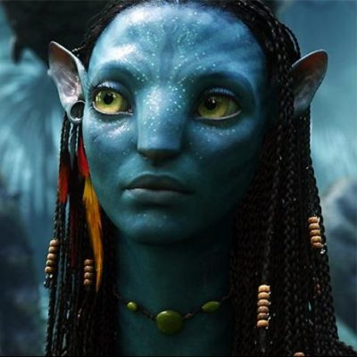

<ion-app>
  <ion-menu menuId="main-menu" contentId="main">
    <ion-content>
      <div class="menu-header-bg"></div>
      <div class="header-content">
        
        <ion-label>
          <h2>Dr. Avatar</h2>
          <p>Film Uzmanı</p>
        </ion-label>
      </div>
      <div class="action-button">
        <ion-button >
          <ion-icon slot="start" name="add"></ion-icon>
          Ekle ekle
        </ion-button>
      </div>
      <ion-list class="menu-items">
        <ion-item>
          <ion-icon  name="pie-chart-outline"></ion-icon>İstatistikler
        </ion-item>
        <ion-item>
          <ion-icon  name="browsers-outline"></ion-icon>Yeni Veriler
        </ion-item>
        <ion-item class="active">
          <ion-icon  name="flash"></ion-icon>Kullanıcılar
        </ion-item>
        <ion-item>
          <ion-icon  name="chatbubble-ellipses-outline"></ion-icon>Mesajlar
        </ion-item>
        <ion-item>
          <ion-icon  name="heart-outline"></ion-icon>Favorilar
        </ion-item>
        <ion-item>
          <ion-icon  name="exit-outline"></ion-icon>Çıkış Yap
        </ion-item>

      </ion-list>
    </ion-content>
  </ion-menu>

  <ion-router-outlet id="main"></ion-router-outlet>
</ion-app>